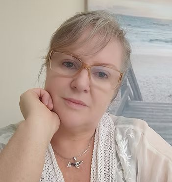

Os Olhos de Micoco
Livro infantil digital
Ver na lojaPsicologia clínica com foco em trauma há 31 anos. Psicoterapia, mentoria para mulheres e palestras para empresas, sempre com escuta, ciência e calma.
Agendar pelo WhatsApp
01
Para quando o passado continua pesando no presente.
Atendimento a adultos e adolescentes que convivem com traumas, ansiedade, fobias, depressão e bloqueios. O trabalho integra métodos voltados ao trauma, como EMDR e Brainspotting, e respeita o tempo de cada pessoa.
Dois vídeos curtos para entender como o cuidado do trauma acontece no consultório.
02
Alta performance também fora do trabalho.
Mentoria individual para empresárias, advogadas e médicas que já realizaram muito na carreira e sentem que a vida pessoal, as relações e o cuidado consigo ficaram para depois.
03
Saúde emocional como parte da rotina de trabalho.
Palestras para equipes e lideranças e consultoria para adequação à NR-1, unindo a experiência clínica a um olhar humano sobre os riscos psicossociais.
Convidar para uma palestraA conexão entre coração e cérebro para regular o estresse.
Autoconhecimento, empatia e inteligência emocional para líderes.
Atenção plena e bem-estar no ambiente de trabalho.
Relações familiares e desenvolvimento emocional.
Consultoria e acompanhamento para gestão dos riscos psicossociais.

Sobre
Psicóloga clínica, mestre, autora e palestrante. Há mais de 40 mil horas acompanhando pessoas em seus processos.
Ler a história completaFormação em Psicologia e início da clínica
Mestrado
Formação em EMDR
Formação em Brainspotting e psicologia corporal
Livros infantis Os Olhos de Micoco e O Incrível Nicolau
Implementadora de NR-1 em empresas
Mentoria Dona de Si
“Uma vez meu paciente, sempre meu paciente.”
Livro infantil digital
Ver na loja
Livro infantil digital
Ver na lojaE-book e curso
Quero ser avisadaLista a confirmar com a Marínea
O primeiro contato é feito pelo WhatsApp, de forma simples e reservada. Conte o que você procura e a Marínea responde com os próximos passos.
Conversar pelo WhatsApp